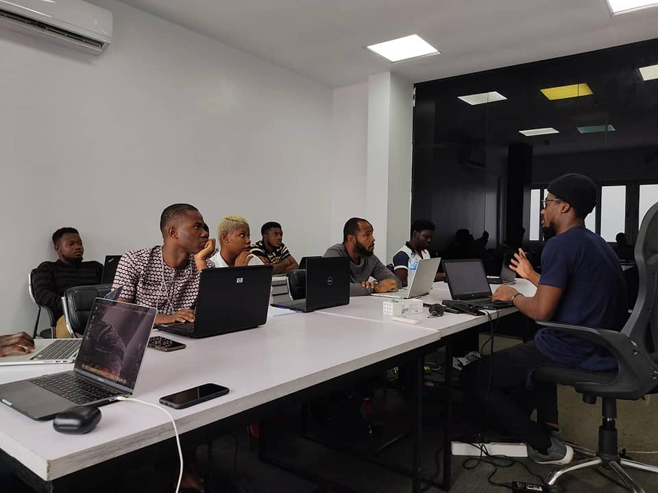

なぜ ”Imani Hacking “?
イマニ・ハッキングはゼロ知識から中級スキルレベルまで学んでおります。このITブートキャンプはやりたいIT仕事学生達に手伝っております。また、このブートキャンプには初心者もプロ向けております。オンラインでやっていますので興味がありますでしょうか？お待ちしております！
もっと読む

一緒に国際的なITエンジニアになりましょう！このプログラムは色んなITエンジニアリングスキルを学びたいあなたに、一緒に国際的なITエンジニアやITリーダーになりましょう！
今参加する！
将来のためにテクノロジーを一緒に活用する事です。
経験豊富ITエンジニアとソフトスキルで国際的なチームに働くを遂げる事です。
イマニ・ハッキングはゼロ知識から中級スキルレベルまで学んでおります。このITブートキャンプはやりたいIT仕事学生達に手伝っております。また、このブートキャンプには初心者もプロ向けております。オンラインでやっていますので興味がありますでしょうか？お待ちしております！
もっと読む学生たちは将来追求したい技術を深く理解するためにコースを受講します。この教育の取り組みは彼らが将来の職業目標に完璧に合致し、強固な基盤を築くのに役立ちます。
学生はプロジェクトについてメンターと会い、ソフトスキルとハードスキルを向上させます。また、将来の計画について尋ね、有益な対話を生み出し、学びや個人および専門的な成長の計画をサポートします。
毎週、学生は当社のプログラミングブートキャンプに参加した後、エンジニアとしての将来の仕事に備えて、自己開発、ソフトスキル、ハードスキルを含む開発スキルについてのZoomライブ講義を受けます。

フロントエンドコース -HTML / Javascript / Phyton

デサイーンコンセプトコース例えば：Usability, Accessibility, ユーザーインタフェース

コード構造を使い方, including Bulma CSS Framework。

学生達に一般的なセキュリティの防ぐを紹介しております。例えば SQL-Injection / XSS。

問題を解決 / 意思決定/ 批判的思考 / グローバル考え方 / チームとして伝言する事
どういう風に効果的な伝達するを観客にお伝えております。
Specialization: Researcher of Chemistry, Coarching
KITドイツとボルドー大学フランスから有機化学と高分子化学の二重博士号を取得し、私の研究は持続可能なセルロースベースの材料に焦点を当てています。現在、私はProcter & Gambleドイツで研究科学者として勤務しています。

Specialization: Software Engineer
Phyton、Django、PostreSQL、MERN stack (MongoDB, Express, React, Node.js)の経験豊富なエンジニア。最新のテクノロジーを学び続け、最新情報を把握しています。既存の機能の強化から新しい製品の構築まで、すべてのプロジェクトに勤勉さと精度をもたらします。

Specialization: Data Scientist, Web Dev, Designer
データサイエンティストおよびアナリストとして、複雑なデータの収集、クリーニング、解析、予測モデルの作成、実用的な洞察の提供に優れています。パターンを発見し、データレポートを生成します。さらに、Pythonフレームワークを使用して、動的かつ安全なウェブサイトを構築する熟練したウェブ開発者でもあります。
プロファイルを見る
Specialization: Automation Developer, Data Analyst
Nuha NuruはPythonやPandasやC言語やRPA(Robotic Process Automation)としてUiPath プラットフォームを使用するの経験豊富なエンジニアです。Nuha Nuru は、新しいテクノロジーを探求し、発見し続ける日々のコミットメントを持つ、イノベーションへの情熱を示す個人です。
Specialization: Software Engineer
8年間経験豊富なソフト開発とテスティング、例えば分析やデータモデリングやでサインやプロジェクト納品や色んな組織的なレベルと共同作業をしております。リーダーからビジネスにマネージする事です。
Specialization: Entreprenership, Mentoring skills
多文化的なバックグラウンドを持つ国際教育愛好者で、現在は日本で教育の修士号を取得中です。異文化理解と学術的成長を促進することに情熱を傾けております。
Specialization: Researcher, Analysis, Mentoring.
ケニアでの元国際NPO社会福祉士およびグリーンディ協会代表理事しかも、経験豊富なキャリア教育コミュニティマネジメントです。GCIデータサイエンスの２０２３年の夏に卒業生です。現在はデータサイエンスとして働いております。

Specialization: Software Engineer
電子商取引からAPIsまでにエンジニアにプロジェクトを開発の案内しております。Node-APIの開発を共同作業するや学生達に学ぶ事をサポートするやプロジェクト作ってるのがチームワークでReact, HTML, CSS, PHP, Laravel, Vue.js, Phyton, Javascriptを使っております。
プロファイルを見る
タンザニアでは、IT分野での労働力の訓練に向けた強化された取り組みが行われていますが、仕事の機会は不足しています。産業の多様化は主要な課題であり、急速に成長しているITおよびソフトウェア産業は重要な主要セクターの1つと見なされています。

インドネシアには、教師のスキル向上に関する取り組みは、主にコンピュータリテラシーに焦点を当てており、IT教育の課題に対処していません。全国的な拡張計画は明確な戦略がないまま早期の試験段階にあります。また、日本でリモートでまたはオフィスで働くITエンジニアにとって、インドネシアは有望な機会と見なされています。

フィリピンでは教育スキルが上がっております。IT教育よりコンピューターエンジニアリングに集中しております。しかも、フィリピンにはITエンジニアリングを上がってる可能性があります。将来では他の国にグローバルチームワークの可能性もあります。
タンザニアの学生に初めてITブートキャンプを行いました。

ダラジャパンの最高経営責任者はNEXT革新者になりました。 - Develop Next Generation Innovators

二回目のタンザニア学生にITブートキャンプを行いました。

インドネシアの学生に初めてITブートキャンプを行いました。
ダラジャパンの最高経営責任者はAPT WOMENになりました (ACCELERATION PROGRAM IN TOKYO FOR WOMEN)